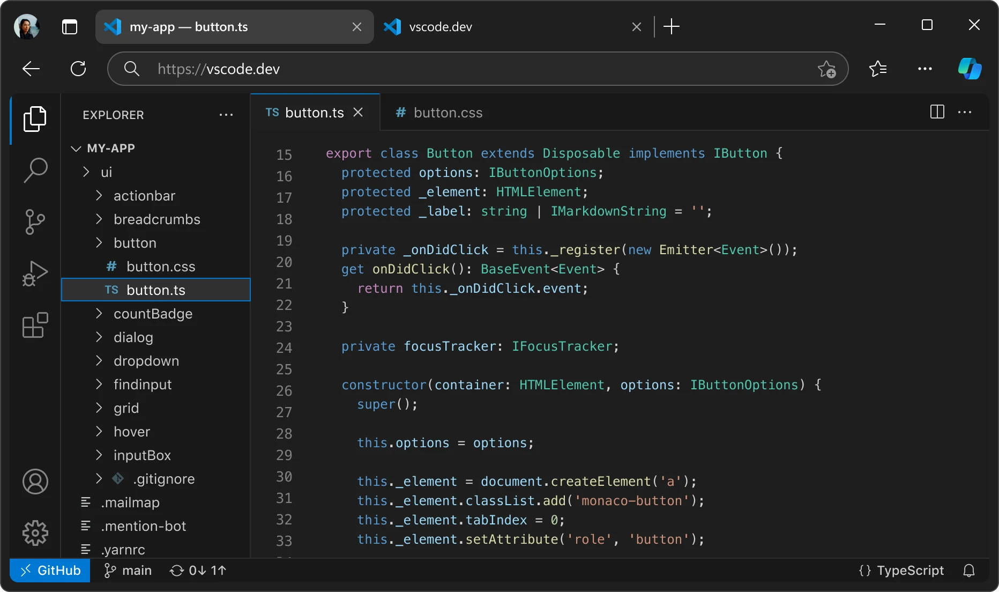
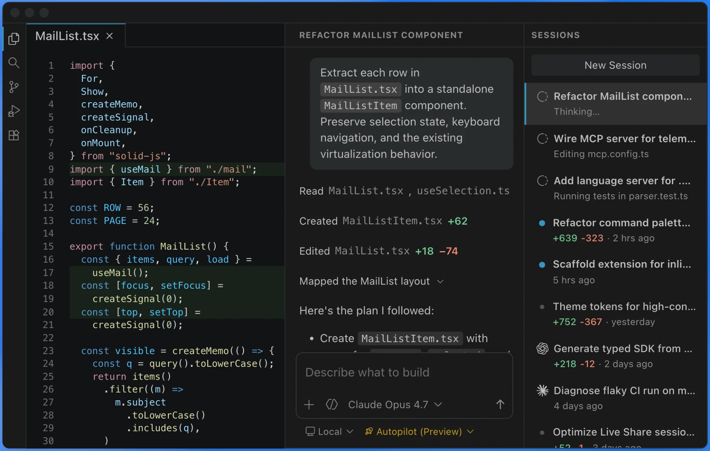

Semantic first
Use the browser correctly before adding layers of JavaScript. Headings, landmarks, buttons, links and forms should mean what they are.
The frontend is where design intent meets real content, unpredictable devices, browser behavior and performance constraints. Good engineering keeps the visual idea intact without making the interface fragile.


semantic HTMLfluid CSSprogressive JSkeyboard + touch✓ ready for real contentA polished screenshot proves almost nothing. The useful question is whether the interface still works with slow networks, long content, keyboard navigation, different viewports and future changes.
Use the browser correctly before adding layers of JavaScript. Headings, landmarks, buttons, links and forms should mean what they are.
Use reusable layout rules, tokens and component scopes rather than page-specific patches that become impossible to reason about.
Add JavaScript for behavior and state, not to recreate browser features or hide structural problems.
Design around content and available space rather than a pile of device-specific breakpoints.
Loading, timeout, empty responses, API errors and disabled actions need deliberate UI behavior.
Fast first render, stable layout and lightweight motion make the product feel more trustworthy and more expensive.
Build a semantic content structure that still makes sense before CSS.
Set containers, grid/flex rules, spacing and fluid type before styling isolated sections.
Add small, composable interactions with clear state ownership and graceful fallback.
Test APIs, CMS content and backend constraints early instead of coding against perfect placeholders.
Run responsive, keyboard, performance and regression passes on actual target browsers.